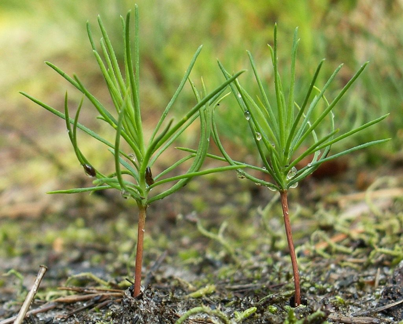
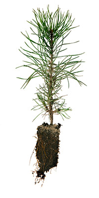
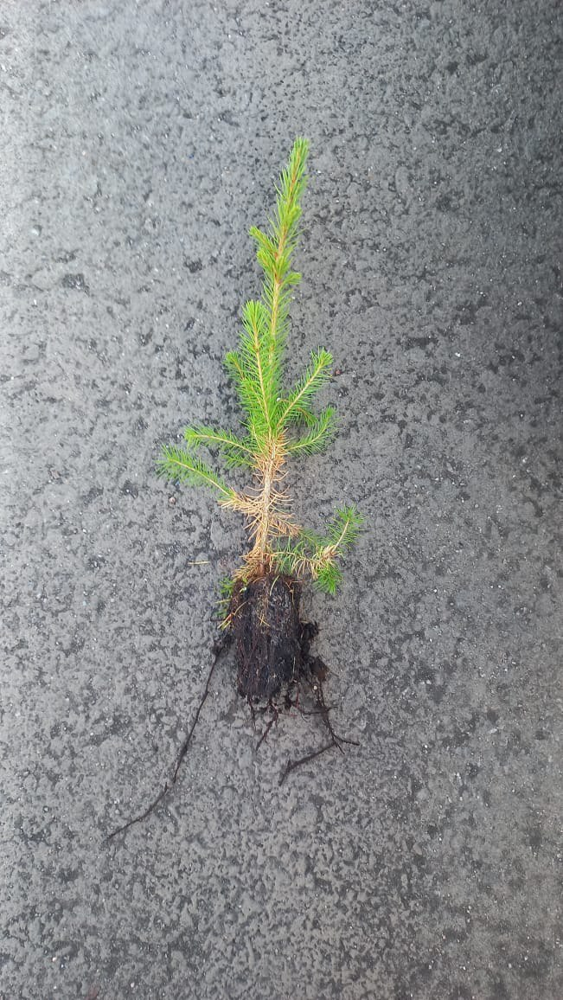

Сеянцы ОКС и ЗКС

Сеянец сосны с ОКС
На постоянной основе мы реализуем сеянцы сосны и ели, выращенные согласно стандартам ГОСТ. В наличии всегда сеянцы ЗКС (закрытой корневой системой) и ОКС (открытой корневой системой).

Сеянец сосны с ЗКС
В качестве посевного материала используются только семена первого класса. Приживаемость ели и сосны ЗКС – более 92%.

Сеянец ели с ОКС
Стандарты сеянцев с ЗКС: Высота сеянца – от 7 до 15 см, толщина шейки стволика – от 2 мм.
Сеянец ели с ЗКС
Доставка сеянцев в любую точку по требованию клиента. Мы гарантируем высокое качество и надежность нашего материала.